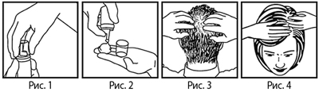

|
 |
| РЕГЕЙН® (REGAINE®) minoxidil пена д/наружн. прим. | ||||||
|
Клинико-фармакологическая группа: Препарат для лечения алопеции у мужчин и женщин Номер и дата регистрации: ЛП-002707 от 13.11.14 Код ATX: D11AX01 |
Владелец регистрационного удостоверения: зарегистрировано Представительство: | |||||
Форма выпуска, состав и упаковка ◊ Пена для наружного применения от белого до желтовато-белого цвета, сохраняющая структуру на протяжении периода наблюдения, составляющего одну минуту.
Вспомогательные вещества: этанол безводный - 536.3 мг, вода очищенная - 314.1 мг, бутилгидрокситолуол - 0.9 мг**, молочная кислота - 10 мг, лимонная кислота безводная - 1 мг, глицерол - 20 мг, цетиловый спирт - 11 мг, стеариловый спирт - 5 мг, полисорбат 60 - 4 мг; пропеллент - пропан/н-бутан/изобутан (%) (48:30:22) - 50.2 мг. 60 г - баллоны алюминиевые (1) с клапаном с распылителем и колпачком с системой защиты от вскрытия детьми - пачки картонные с прозрачным окном из полиэтилентерефталата и наклейкой из ацетилцеллюлозы. * фактическое количество миноксидила, без пропеллента, составляет 50 мг/г; | ||||||
| ||||||
Описание препарата основано на официально утвержденной инструкции по применению и утверждено компанией-производителем для издания 2023 г. | ||||||
Фармакологическое действие |
Фармакокинетика |
Показания |
Режим дозирования |
Побочное действие |
Противопоказания |
Беременность и лактация |
Особые указания |
Передозировка |
Лекарственное взаимодействие |
Условия хранения и сроки годности |
Условия реализации
Фармакологическое действие
Являясь периферическим вазодилататором, миноксидил при наружном применении усиливает микроциркуляцию в области волосяных фолликулов. Стимулирует фактор роста эндотелия сосудов, который, как предполагается, ответственен за повышение проницаемости капилляров, что свидетельствует о высокой метаболической активности, наблюдаемой в фазе анагена. Миноксидил стимулирует рост волос у пациентов с наследственной потерей волос (андрогенная алопеция) в начальной и умеренной стадии. Точный механизм действия миноксидила для наружного применения при выпадении волос до конца не изучен. Фармакокинетика
Всасывание При наружном применении на неповрежденной коже приблизительно 1–2% раствора миноксидила подвергается системной абсорбции. В клиническом исследовании системная абсорбция 5% пены для наружного применения составила приблизительно половину от системной абсорбции 5% раствора для наружного применения. Средние значения AUC0–12 ч и Cmax при применении 5% пены составили 8.81 нг×ч/мл и 1.11 нг/мл соответственно, что соответствует приблизительно 50% аналогичных показателей при использовании 5% раствора (18.71 нг×ч/мл и 2.13 нг/мл соответственно). Тmax при применении 5% пены составляет 5.42 ч и сходно с таковым при применении 5% раствора (5.79 ч). Влияние миноксидила на гемодинамику не выражено до тех пор, пока средняя сывороточная концентрация миноксидила не достигнет 21.7 нг/мл. Распределение Хотя ранее сообщалось о том, что миноксидил не связывается с белками плазмы, позднее методом ультрафильтрации in vitro было продемонстрировано его обратимое связывание с белками плазмы крови человека в диапазоне 37–39%. Поскольку абсорбируется только 1–2% нанесенного наружно миноксидила, степень связывания с белками плазмы, отмечающегося in vivo после наружного нанесения, будет клинически незначимой. Vd миноксидила после в/в введения в дозе 4.6 мг и 18.4 мг составляет 73.1 л и 69.2 л соответственно. Метаболизм Примерно 60% миноксидила, абсорбировавшегося после наружного применения, метаболизируется с образованием миноксидила глюкуронида, преимущественно в печени. Выведение Т1/2 миноксидила для наружного применения в среднем составляет 22 ч, по сравнению с 1.49 ч при пероральном применении. 97% миноксидила и его метаболитов экскретируются почками и 3% – через кишечник. После прекращения применения препарата примерно 95% миноксидила, нанесенного наружно, выводится в течение 4 дней. Режим дозирования
Препарат применяют наружно. Перед применением лекарственного препарата Регейн® волосы и кожу волосистой части головы следует тщательно высушить. Для эффективности препарата и его достижения волосяных фолликулов важно наносить препарат на кожу волосистой части головы, а не на волосы. Мужчинам - 1 г (1/2 колпачка) пены наносить 2 раза/сут (утром и вечером) на пораженные участки волосистой части головы. Не следует применять Регейн® чаще чем 1 раз в 12 ч. Суммарная суточная доза не должна превышать 2 г препарата (100 мг миноксидила). Женщинам - 1 г (1/2 колпачка) пены наносить 1 раз/сут на пораженные участки волосистой части головы. Не следует применять Регейн® чаще чем 1 раз/сут. Суточная доза не должна превышать 1 г препарата (50 мг миноксидила). Не следует наносить препарат Регейн® на другие участки тела. Рекомендации по использованию баллона  1. Повернуть колпачок таким образом, чтобы стрелки на распылителе и колпачке находились друг против друга (рис. 1). 2. Наклонив колпачок назад, снять его. 3. Перед выдавливанием пены рекомендуется сначала сполоснуть пальцы холодной водой и тщательно высушить, т.к. при контакте с теплой кожей пена может раствориться. 4. Перевернув баллон вверх дном, нажать на распылитель и выдавить на пальцы необходимое количество пены (рис. 2). 5. Распределить пену кончиками пальцев по участкам облысения и осторожно втереть в кожу волосистой части головы (рис. 3 и 4). 6. После использования препарата Регейн® надеть на баллон колпачок. Чтобы сохранить упаковку защищенной от случайного вскрытия детьми, необходимо проверить, чтобы стрелки на распылителе и колпачке не были совмещены. После нанесения препарата Регейн® необходимо тщательно вымыть руки. Появление первых признаков приостановления выпадения волос и восстановления роста волос возможно после применения лекарственного препарата Регейн® 2 раза/сут у мужчин в течение 2–4 мес и 1 раз/сут у женщин в течение 3–6 мес. Для достижения и поддержания достигнутого эффекта восстановления роста волос пациент не должен прерывать применение препарата, иначе выпадение волос возобновится. Повышение дозы препарата или более частое его применение не приведет к улучшению результатов терапии. Если после применения лекарственного препарата Регейн® у мужчин в течение 16 недель и у женщин в течение 24 недель усиление роста волос не отмечается, применение препарата следует прекратить. После начала применения лекарственного препарата Регейн® может отмечаться усиленное выпадение волос. Данный эффект вызван влиянием миноксидила. Он выражается в стимулировании перехода волос из фазы покоя (телоген) в фазу роста (анаген). Таким образом, отмечается выпадение старых волос, на месте которых вырастают новые. Временное усиление выпадения волос обычно продолжается в течение 2–6 недель с момента начала лечения, а затем уменьшается в течение 2 недель. Побочное действие
Частота побочных реакций приведена в виде следующей градации: очень часто (≥1/10); часто (≥1/100, <1/10); нечасто (≥1/1000, <1/100); редко (≥1/10000, <1/1000); очень редко (<1/10000), включая отдельные сообщения неуточненной частоты (частота не может быть подсчитана по доступным данным). Нежелательные явления, которые отмечались в ходе клинических исследований Со стороны нервной системы: часто - головная боль. Со стороны кожи и подкожных тканей: часто - кожный зуд, сыпь; редко - дерматит, проявляющийся в виде покраснения, шелушения и воспаления. Прочие: часто - увеличение массы тела. Постмаркетинговые данные Со стороны иммунной системы: очень редко - ангионевротический отек (отек губ, отек тканей ротовой полости, отек ротоглотки, отек глотки и отек языка), гиперчувствительность (отек лица, генерализованная эритема, генерализованный кожный зуд, чувство стеснения в горле), аллергический контактный дерматит. Психические нарушения: очень редко - депрессивное настроение. Со стороны нервной системы: очень редко - головокружение, головная боль. Со стороны органа зрения: очень редко - раздражение глаз. Со стороны сердца: очень редко - тахикардия, ощущение сердцебиения. Со стороны сосудов: нечасто - снижение АД. Со стороны дыхательной системы: очень редко - одышка. Со стороны ЖКТ: очень редко - тошнота, рвота. Со стороны кожи и подкожных тканей: очень редко - реакции в месте применения (эти реакции могут распространяться на уши и лицо, включают кожный зуд, раздражение, боль, сыпь, отек, сухость кожи, эритему; однако в некоторых случаях реакции могут быть более тяжелыми, включая эксфолиацию, дерматит, образование пузырей, кровотечение, изъязвление), временное выпадение волос, изменения цвета волос, нарушение текстуры волос, гипертрихоз (нежелательный рост волос вне места применения). Прочие: очень редко - периферический отек, боль в грудной клетке. Если любые из указанных в инструкции побочных эффектов усугубляются или отмечаются любые другие побочные эффекты, не указанные в инструкции, пациенту следует сообщить об этом врачу. Противопоказания
С осторожностью следует назначать препарат пациентам с сердечно-сосудистыми заболеваниями, аритмией, почечной и печеночной недостаточностью. Перед началом применения препарата таким пациентам следует проконсультироваться с врачом. Применение при беременности и кормлении грудью
Препарат Регейн® в форме пены противопоказан женщинам при беременности и в период грудного вскармливания. Особые указания
Перед тем как начать лечение препаратом Регейн®, необходимо провести общее обследование, включающее сбор и изучение медицинского анамнеза. Врач должен убедиться в том, что кожа волосистой части головы здорова. Наносить лекарственный препарат Регейн® следует только на здоровую кожу волосистой части головы. Нельзя применять препарат при воспалении, инфицировании, раздражении, болезненности кожи, а также одновременно с другими лекарственными препаратами, наносимыми на кожу волосистой части головы. Не следует применять лекарственный препарат Регейн® в случаях внезапного выпадения волос, очаговой алопеции, когда алопеция развивается после родов, в случае облысения, вызванного приемом лекарственных средств, неправильным питанием (дефицит железа, витамина А), в результате укладки волос в "тугие" прически, а также в том случае, когда причина выпадения волос неизвестна. При снижении АД или появлении боли в грудной клетке, учащенного сердцебиения, слабости или головокружения, внезапного необъяснимого увеличения массы тела, отека кистей или стоп, стойкого покраснения или раздражения кожи волосистой части головы пациенту следует прекратить применение препарата Регейн® и обратиться к врачу. При сохранении или ухудшении симптомов, или при появлении новых симптомов пациенту необходимо прекратить применение препарата и проконсультироваться с врачом. Препарат может активировать рост нежелательных волос при его нанесении на другие участки кожи, кроме кожи волосистой части головы. Некоторые компоненты препарата могут вызывать жжение и раздражение. В случае попадания препарата на чувствительные поверхности (глаза, раздраженную кожу, слизистые оболочки) необходимо промыть пораженный участок большим количеством прохладной воды. Препарат содержит бутилгидрокситолуол, цетиловый и стеариловый спирт, которые могут вызвать местные кожные реакции (например, контактный дерматит). Случайный прием препарата внутрь может привести к развитию серьезных нежелательных явлений со стороны сердца. Поэтому данный препарат следует хранить в местах, недоступных для детей. Содержимое баллона находится под давлением. Не прокалывать и не сжигать баллон. Препарат легко воспламеняется, поэтому не следует распылять содержимое баллона вблизи открытого огня, полированных или окрашенных поверхностей. Следует избегать контакта баллона с источниками открытого огня при использовании, хранении и утилизации. Не нагревать баллон выше 50°С. При нанесении препарата следует воздержаться от курения. Если лекарственное средство пришло в негодность или истек срок годности, не следует выливать его в сточные воды или выбрасывать на улицу. Необходимо поместить препарат в пакет и положить в мусорный контейнер. Эти меры помогут защитить окружающую среду. Рекомендации по применению лекарственного препарата совместно со средствами по уходу за волосами Лекарственный препарат не будет эффективен при использовании:
Для нанесения лекарственного препарата нет необходимости в мытье головы. В случае мытья головы перед применением лекарственного препарата, необходимо высушить волосы и кожу головы. При использовании средств для укладки волос необходимо сначала нанести пену и дождаться, пока она высохнет, а затем использовать средства для укладки волос. Мытье головы допускается не менее чем через 4 ч после нанесения лекарственного препарата. Данных о влиянии окрашивания, химической завивки, распрямителей для волос на эффективность лекарственного препарата нет. Поскольку химическая завивка и окрашивание могут вызывать раздражение кожи головы, рекомендуются следующие меры предосторожности:
Влияние на способность к управлению транспортными средствами и механизмами В связи с возможным развитием головной боли, головокружения, гипотонии, раздражения глаз следует соблюдать осторожность при управлении транспортными средствами и занятиями определенными видами деятельности, требующими повышенной концентрации внимания и быстрой двигательной реакции. При появлении описанных нежелательных явлений следует воздержаться от выполнения указанных видов деятельности. Передозировка
Если дозы, превышающие рекомендуемые, наносятся на обширные участки тела или другие участки тела, помимо волосистой части головы, возможно увеличение системной абсорбции миноксидила, что может привести к развитию нежелательных явлений. Симптомы: нежелательные эффекты со стороны сердечно-сосудистой системы, связанные с задержкой натрия и воды, а также тахикардия, снижение АД и головокружение. Лечение: проведение симптоматической и поддерживающей терапии. Для лечения тахикардии могут быть назначены бета-адреноблокаторы, для устранения отеков – диуретики. В случае снижения АД следует ввести в/в 0.9% раствор натрия хлорида. Не следует применять симпатомиметические средства, например, эпинефрин и норэпинефрин, обладающие чрезмерной кардиостимулирующей активностью. При проглатывании препарата пациенту необходимо незамедлительно обратиться за медицинской помощью. Лекарственное взаимодействие
Существует теоретическая возможность усиления ортостатической гипотензии у пациентов, получающих сопутствующее лечение периферическими сосудорасширяющими средствами, не получившая, однако, клинического подтверждения. Нельзя исключить очень незначительное повышение содержания миноксидила в крови у пациентов с артериальной гипертензией, принимающих миноксидил внутрь, в случае одновременного применения препарата Регейн®, хотя соответствующие клинические исследования не проводились. Установлено, что миноксидил для наружного применения может взаимодействовать с некоторыми другими лекарственными средствами для наружного применения. При наружном применении миноксидил не следует применять одновременно с любыми другими лекарственными средствами (ГКС, третиноином, антралином), наносимыми на кожу волосистой части головы. Одновременное применение миноксидила в форме пены для наружного применения и крема, содержащего бетаметазон (0.05%), приводит к снижению системного всасывания миноксидила. Одновременное применение крема, содержащего третиноин (0.05%), приводит к увеличению всасывания миноксидила. Одновременное нанесение на кожу миноксидила и препаратов для наружного применения, таких как третиноин и дитранол, которые вызывают изменения защитных функций кожи, может привести к увеличению всасывания миноксидила. |
||||||
Вернуться наверх |
||||||
Copyright © Справочник Видаль «Лекарственные препараты в России», Москва, Россия